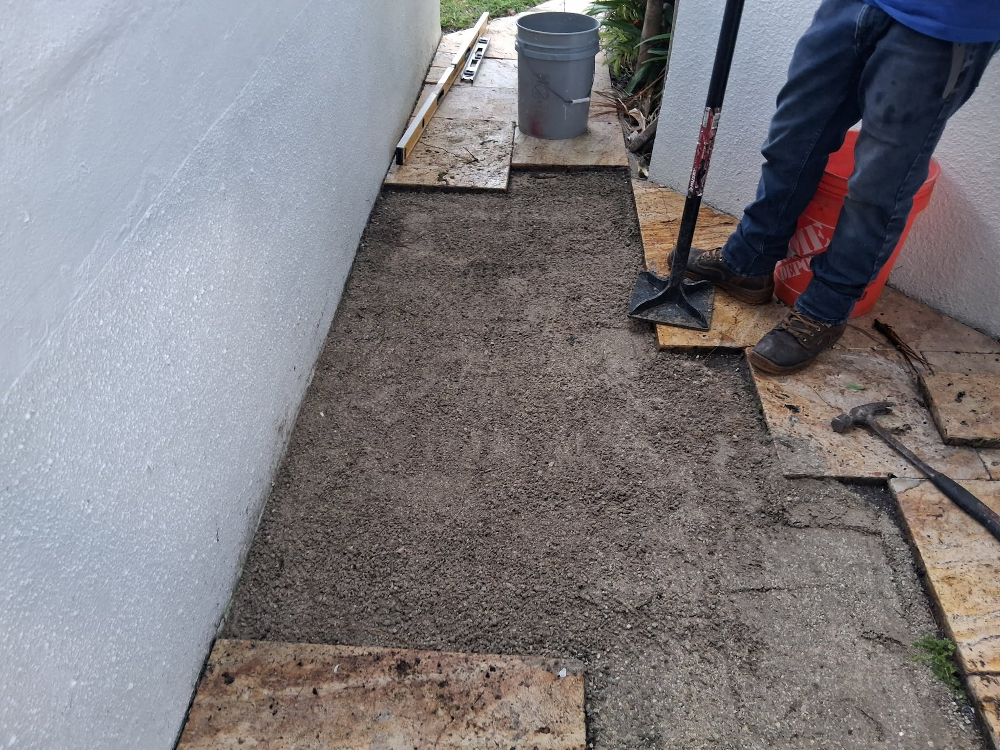

Every project tells a story. This one started with a phone call from a homeowner in Boynton Beach who had been looking at her cracked, weed-covered concrete backyard for the past four years — and finally decided to do something about it. What we built together over the course of five days became one of our team's favorite projects of 2025.
The Problem: Cracked Concrete and Wasted Space
The backyard had an original concrete slab installed in the mid-2000s. After nearly 20 years, it had settled unevenly, cracked in multiple places, and become a trip hazard. The area measured roughly 1,200 square feet — a significant outdoor space that was completely unusable for entertaining. Weeds had overtaken the expansion joints, and standing water collected in the low spots after every rain.
The homeowner's vision: a beautiful, functional outdoor living area where her family could host friends, set up a dining table, and enjoy the South Florida evenings without staring at concrete damage.
The Design Process
We met with the homeowner twice before breaking ground. During the design consultation, we brought samples of our most popular paver options and worked through several layout concepts together. She ultimately chose tumbled brick pavers in a warm buff tone, with a charcoal soldier-course border that runs the full perimeter and defines a central seating area.
The design also incorporated:
- A 12-foot circular fire pit area with a contrasting dark paver inlay
- A built-in seating wall (18" tall, 16" wide) along the back fence line
- Two dedicated zones: a dining area near the house and a lounge area near the fire pit
- Proper drainage slope (1/4" per foot) directing water away from the house

Day-by-Day Installation
Day 1: We began by sawcutting and removing the existing concrete slab — about 12 tons of material that we hauled away in two trips. Excavated an additional 4 inches below grade to establish the correct base depth.
Day 2: Installed 4 inches of compacted road base rock followed by 1 inch of bedding sand. Used a plate compactor to achieve proper density throughout. Set edge restraints along the perimeter.
Day 3–4: Laid all 1,200 square feet of pavers, cutting and fitting around the fire pit circle and perimeter border. The fire pit circle required hand-cutting each radial piece individually.
Day 5: Completed the seating wall, applied polymeric joint sand, plate-compacted the final surface, and applied a penetrating sealer. Final inspection and cleanup.
The Result
The homeowner's reaction when she saw the finished backyard was, in her words, "I feel like I added a whole new room to my house." That's exactly what a well-designed paver patio does — it extends your living space outdoors and creates a place you actually want to spend time.
The total project cost was approximately $18,400, including all materials, labor, concrete removal, drainage, the seating wall, and sealing. For a 1,200 sq ft fully designed outdoor living space in Palm Beach County, that represents genuine value for the investment.
Thinking about your own backyard transformation? Call us at (561) 970-1917 and let's talk about what's possible for your space. Free estimates, no obligation.